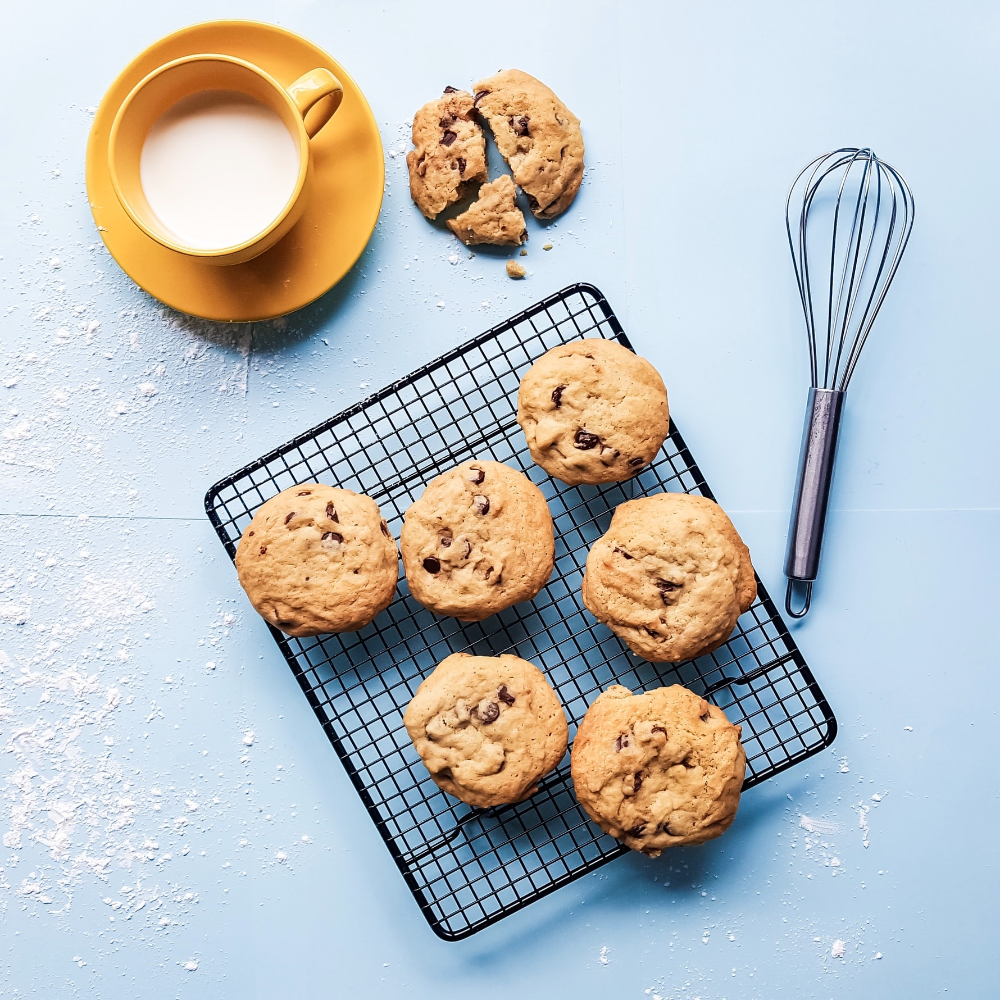

Oliver's Recipes

To launch my new recipe blog, I'd like to start with a classic: chocolate chip cookies.
Cookies always bring back memories of home, and there's no better recipe than the one right here, so get your mixer out and start cooking!
Ingredients
- 1 cup Butter
- 1 cup White Sugar
- 1 cup Brown Sugar
- 2 tsp Vanilla Extract
- 2 Eggs
- 3 cups Flour
- 1 tsp Baking Soda
- ½ tsp Baking Powder
- 2 cups Chocolate Chips
Instructions
- Preheat the oven to 350°F
- Prepare a baking sheet with parchment paper, or alternatively use a pizza stone with no coating.
- Mix together the flour, soda, salt, and powder. Place this mixture to the side for now.
- Mix the butter + both sugars. Mix until creamed.
- Crack and mix in the eggs for a fluffy consistency.
- Mix in the vanilla + dry ingredients until smooth.
- Pour in the chips and stir slightly.
- Form balls on your baking surface around 3 tablespoons in volume. Adjust this size if you see fit.
- Bake, in batches if necessary, until tops are just turning brown. Let cookies cool as they continue to bake after removed from the oven. This will take approximately 8-10 mins.
- Enjoy!
Cook Times
The times below indicate how long to cook for given the volume you've chosen to make your cookies.
| Size |
Time |
| 2 Tbs |
7 mins |
| 3 Tbs |
9 mins |
| 4 Tbs |
10 mins |
| 5 Tbs |
11 mins |
More cookie recipes